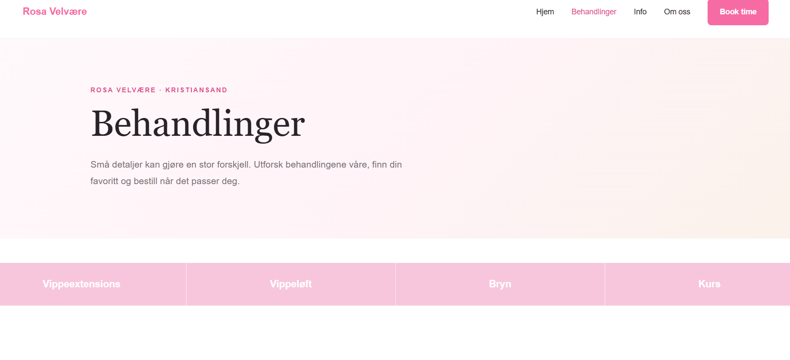
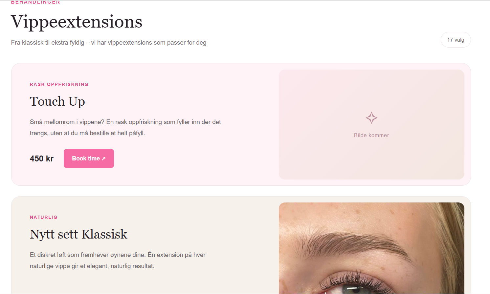
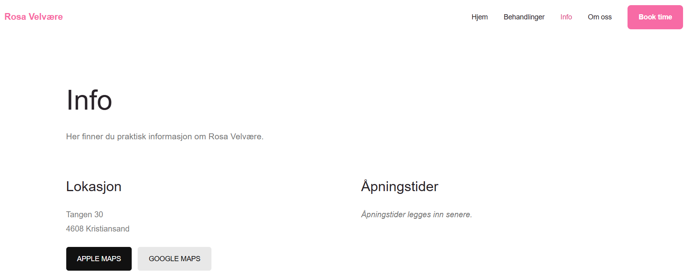

Praksis hos Rosa Velvære AS
Status 2
Siden forrige statusoppdatering har vi gått fra planlegging og design til utvikling av nettsiden. Her viser vi hva vi har jobbet med så langt.
Statusoppdatering
Video – Utviklingen av nettsiden
I videoen viser vi frem arbeidet vårt siden Status 1. Vi går gjennom utviklingen av nettsiden, noen av løsningene vi har valgt og utfordringer vi har møtt underveis.
Arbeidet siden Status 1
Fra skisser til nettside
Siden forrige statusoppdatering har vi startet utviklingen av nettsiden for Rosa Velvære. Vi har tatt utgangspunkt i skissene vi lagde i Figma og begynt å gjøre dem om til en fungerende nettside ved hjelp av HTML, CSS og JavaScript.
Vi har opprettet fire sider: forside, behandlinger, info og om oss. Foreløpig har vi prioritert behandlingssiden, hvor vi har jobbet med kategorisering av behandlinger, priser, bilder og bookingknapper. Målet har vært å gjøre det enkelt for kundene å finne informasjonen de trenger.
Erfaringer og utfordringer
Utfordringer underveis
En av utfordringene har vært å overføre designet fra Figma til kode. Selv om vi hadde skisser å ta utgangspunkt i, har vi måttet gjøre flere justeringer underveis. Dette gjelder spesielt plassering av elementer, navigasjon og hvordan behandlingene skal presenteres.
Vi har også erfart hvor viktig det er å tenke på brukervennlighet, samtidig som nettsiden skal ha et uttrykk som passer til bedriften.
Utviklingsarbeidet
Bilder av nettsiden
Bildene under viser hvordan nettsiden ser ut på dette stadiet av utviklingen. Vi har foreløpig jobbet mest med behandlingssiden, mens de andre sidene skal videreutvikles.



